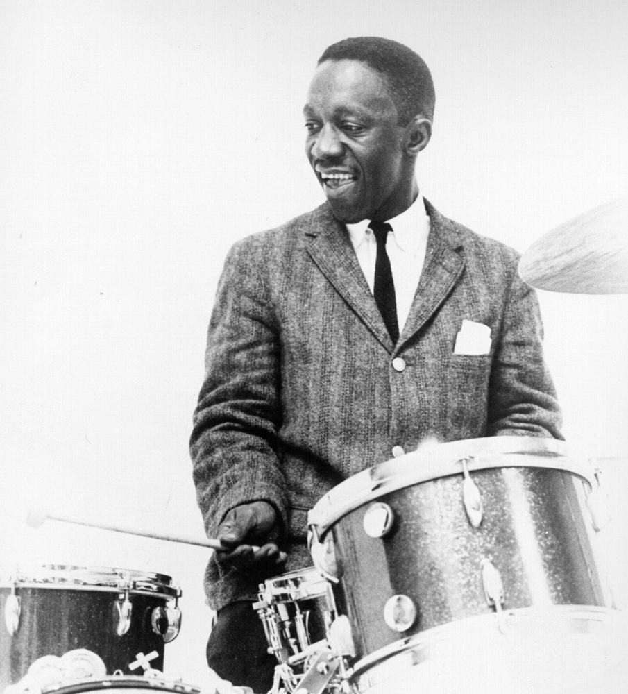
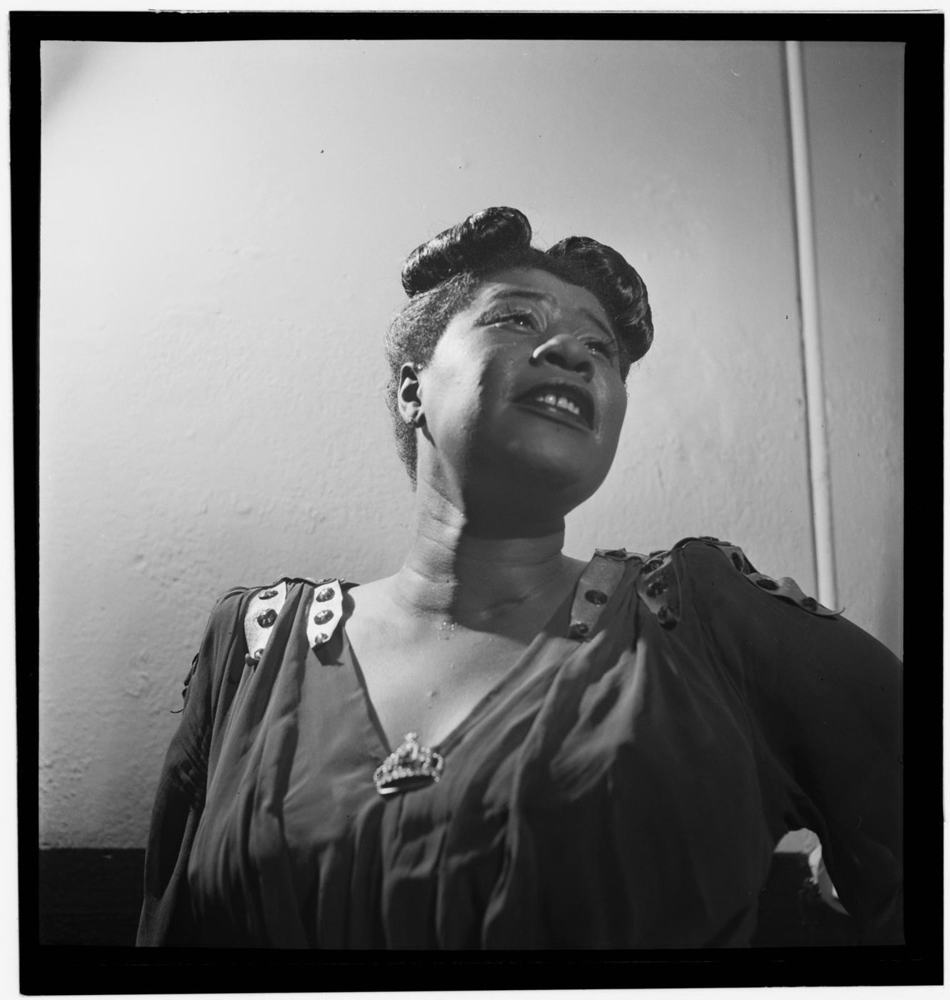

故事
不知道從哪一張開始聽爵士？先聽這五張。第一張，Miles Davis 的 Workin'，輕鬆、好入耳。第二張，Bill Evans 三重奏的 Sunday at the Village Vanguard，適合晚上聽。
第三張，Art Blakey 的 Moanin'，鼓聲很大、很有勁。第四張，Sonny Rollins 的 Saxophone Colossus，薩克斯風一路即興。第五張，Ella Fitzgerald 和 Louis Armstrong 合作的 Ella and Louis。

一個唱得清亮，一個唱得沙啞，聽起來很開心。五張剛好包含小號、鋼琴、鼓、薩克斯風和人聲。收藏起來，下次不知道要聽什麼，就從這五張開始。
故事後面
這五張是入門最常被推薦的爵士唱片之一：Miles Davis 的 Workin'、Bill Evans 的 Sunday at the Village Vanguard、Art Blakey 的 Moanin'、Sonny Rollins 的 Saxophone Colossus，以及 Ella and Louis。
它們剛好涵蓋小號、鋼琴、鼓、薩克斯風和人聲，風格從輕鬆到熱烈都有。
每張先挑一首聽就好，喜歡哪一張，再順著那位樂手往下聽。

這樣聽
聽一個清亮、一個沙啞的聲音輪流唱，開心地對話。
逐句英文
Don't know where to start with jazz? Start with these five.
One: Miles Davis, Workin'. Relaxed and easy on the ear.
Two: the Bill Evans Trio, Sunday at the Village Vanguard. For late nights.
Three: Art Blakey, Moanin'. Big drums, lots of drive.
Four: Sonny Rollins, Saxophone Colossus. Saxophone improvising all the way.
Five: Ella Fitzgerald and Louis Armstrong, Ella and Louis.
One voice clear, one gravelly, and it all sounds like fun.
Together they cover trumpet, piano, drums, saxophone and voice.
Save this. Whenever you're not sure what to play, start here.
查證筆記與出處
選片是推薦，不是事實。和 EP（Bill Evans Vanguard）、（Sonny Rollins 橋）主角重疊，只當推薦清單帶過。
https://en.wikipedia.org/wiki/Workin%27_with_the_Miles_Davis_Quintet
https://en.wikipedia.org/wiki/Sunday_at_the_Village_Vanguard
https://en.wikipedia.org/wiki/Moanin%27
https://en.wikipedia.org/wiki/Saxophone_Colossus
https://en.wikipedia.org/wiki/Ella_and_Louis
一分鐘影片版在 Instagram @jazz101tw。